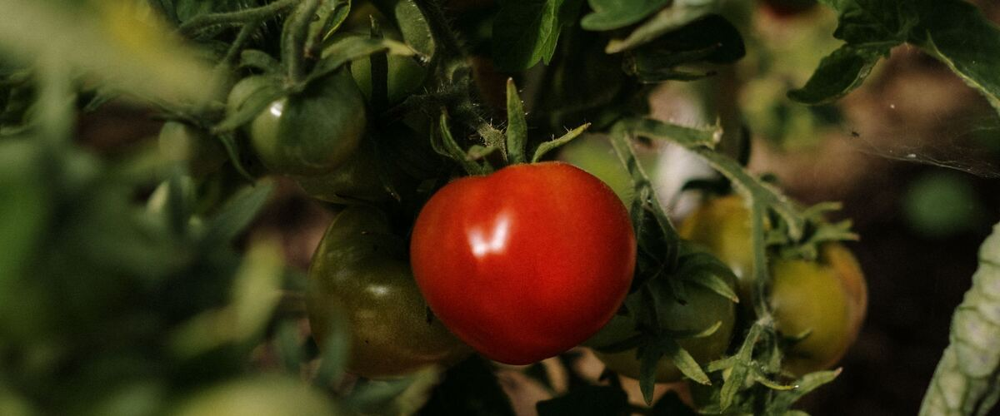

Late Blight on Tomatoes: How to Spot It and Keep It Away
Cool, wet weather makes late blight a real threat to Northwest tomatoes and potatoes. Learn the signs, how it differs from other leaf spots, and how to prevent it.
Late blight is the disease behind the Irish potato famine, and it still destroys tomato and potato plants in home gardens today. It loves exactly the weather the Northwest is known for: cool temperatures, rain and long, damp nights. West of the Cascades it most often shows up in late summer and early fall, when rain and heavy dew return.
What causes it
Late blight is caused by Phytophthora infestans, a water mold. It spreads by spores that travel on the wind and need wet leaves to infect a plant. In cool, wet weather it moves very fast and can kill whole plants within a week or two.
How to recognize it
- Leaves: large, irregular patches that look gray-green and water-soaked at first, then turn brown. In damp weather a white, fuzzy growth may appear on the underside around the edges of the patches.
- Stems: dark brown to black lesions that can girdle the stem.
- Fruit: firm, greasy-looking brown blotches, often on the upper half of green tomatoes.
Don't confuse it with these
- Early blight makes brown spots with rings like a target, usually starting on the oldest, lowest leaves and moving up slowly over weeks.
- Septoria leaf spot makes many small, round spots with dark edges and pale centers, also starting low on the plant.
Both of those are slower and less destructive. Late blight's big, fast-spreading patches and dark stem lesions are what set it apart.
How to prevent it
- Keep the leaves dry. This matters most. Water at the base of the plant, ideally with drip or a soaker hose, and avoid sprinklers. Many Northwest gardeners grow tomatoes under a roof overhang, in a hoop house or under a simple rain cover so fall rain never touches the leaves.
- Give plants room. Space and prune so air moves through and leaves dry quickly after rain.
- Grow resistant varieties. Some tomatoes are bred to resist late blight, such as Defiant PhR, Mountain Magic and Iron Lady. Check catalog descriptions for "late blight resistance."
- Clean up potatoes. The disease survives the winter in living potato tissue, like tubers left in the ground or in a cull pile, not in bare soil. Dig every potato at harvest and pull any volunteers that come up next spring.
- Buy healthy starts and check them for spots before planting.
Some protective sprays labeled for late blight can slow it if they're applied before symptoms appear and repeated as the label directs. They don't cure plants that are already infected.
If your plants get it
- Remove infected leaves and stems right away, on a dry day.
- If most of the plant is affected, pull the whole plant. Bag it or put it in the yard-debris bin rather than leaving it in the garden, where it keeps releasing spores.
- Pick any unblemished green tomatoes. Many will ripen indoors.
- For potatoes, cut down and remove infected vines, then wait about two weeks before digging so the tubers aren't infected on the way out of the ground.
Choosing early varieties also helps, since they ripen most of their crop before fall rains arrive. See the best tomatoes for the Northwest.